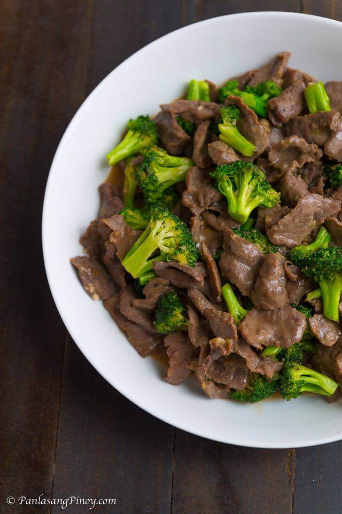

Beef Broccoli

Description
Beef with Broccoli is an Asian beef main dish. As the name suggests, this dish is mainly comprised of beef and broccoli combined with different sauces for that delightful Asian flavor.
Ingredients
- 1 lb beef sliced into thin pieces
- 2 cups broccoli cut into florets
- 2 teaspoons ginger minced
- 2 cloves garlic minced
- 1 tablespoon cornstarch
- ½ to ¾ cups water optional
- ¼ cup cooking oil
- salt and ground black pepper to taste
Marinade Ingredients
- ¼ cup oyster sauce
- 1 tablespoon liquid seasoning
- ½ teaspoon sesame oil optional
- 3 tablespoons cooking wine optional
- 1 teaspoon granulated white sugar
Instructions
- Combine beef, oyster sauce, liquid seasoning, sesame oil, cooking wine, and sugar in a bowl. Mix well. Marinate beef for 15 minutes. Add cornstarch and mix to blend with all the ingredients. Set aside.
- Heat 2 tablespoons cooking oil in a cooking pot. Sauté ginger and garlic. Add broccoli before the garlic starts to brown. Stir-fry for 1 to 2 minutes. Remove from the pot. Set aside.
- Pour the remaining oil into the pot. Add marinated beef once the oil gets hot. Stir-fry until the beef browns. You can add water to tenderize the beef further. If water is added, let it boil and stir as it evaporates. Add salt and ground black pepper to taste.
- Put the cooked broccoli into the pot with the beef. Stir-fry for 3 minutes.
- Transfer to a serving plate. Serve!